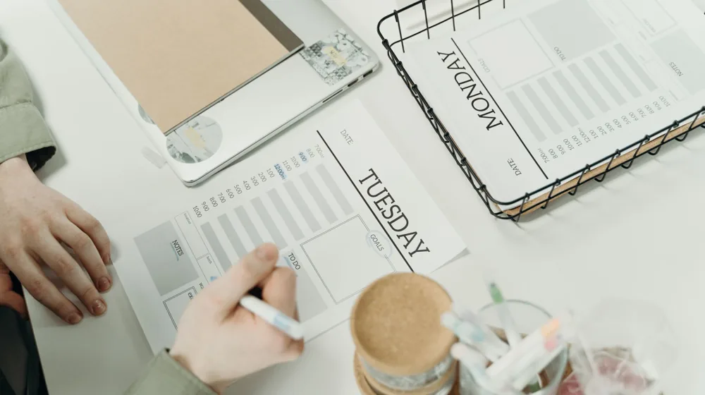

미루는 습관, 혹시 당신도? 지금 당장 시작하는 5단계 실천법
사진: Ahmed / Pexels (무료 이미지, 출처 표기)
혹시 당신도 미루는 습관 때문에 고민인가요?

새해 계획, 업무 마감일, 시험공부 등 중요한 일을 앞두고 매번 '다음에 하지 뭐'라며 뒤로 미루고 있지는 않으신가요? 이러한 미루는 습관은 단순한 게으름을 넘어 스트레스와 죄책감을 유발하고, 결국 목표 달성을 가로막는 주된 원인이 됩니다. 이 글은 미루는 습관의 심리적 배경을 이해하고, 오늘부터 바로 적용할 수 있는 구체적인 5가지 실천법을 안내하여 당신의 삶을 더욱 생산적으로 바꿀 수 있도록 돕습니다.
미루는 습관, 왜 생기는 걸까요?
미루는 습관은 단순히 의지가 약해서 발생하는 문제가 아닙니다. 행동 심리학 전문가들에 따르면, 완벽주의, 실패에 대한 두려움, 과제에 대한 압도감, 심지어는 낮은 자기 통제력과 같은 복합적인 심리적 요인들이 작용해 특정 행동을 뒤로 미루게 만듭니다.
- 완벽주의: 완벽하게 해내야 한다는 압박감에 시작조차 못 합니다.
- 실패에 대한 두려움: 결과가 좋지 않을까 하는 불안감에 시작을 회피합니다.
- 과제 압도감: 너무 거대하거나 복잡해 보이는 일 앞에서 뭘 해야 할지 몰라 얼어붙습니다.
- 낮은 자기 통제력: 단기적인 만족(휴식, 유흥)을 위해 장기적인 목표를 희생합니다.
이러한 원인을 이해하는 것이 미루는 습관을 개선하는 첫걸음입니다.
지금 바로 실천! 미루는 습관 극복 5단계 가이드
복잡하고 거창한 계획은 또다시 미루기 쉽습니다. 아래 5단계 가이드는 2026년 8월 기준으로 많은 행동 전문가들이 추천하는 실용적인 방법들이며, 오늘부터 바로 당신의 일상에 적용할 수 있습니다.
-
1단계: '아주 작게' 쪼개기 (Five-Minute Rule)
어떤 일이 너무 거대하고 버겁게 느껴질 때, 우리는 쉽게 시작을 포기합니다. 이때 핵심은 그 일을 '아주 작게' 쪼개는 것입니다. 예를 들어 '보고서 쓰기'가 목표라면, '보고서에 제목 쓰기', '개요 한 문장 작성하기' 등으로 세분화합니다.
특히 '5분 규칙(Five-Minute Rule)'은 매우 효과적입니다. 일단 5분만 이 일에 집중하겠다고 다짐하고 시작하는 것입니다. 대부분의 경우, 5분만 넘기면 관성이 붙어 더 오랜 시간 작업을 이어갈 수 있습니다. 뇌가 '시작'이라는 허들을 넘으면 다음 행동으로의 전환이 쉬워지기 때문입니다.
-
2단계: 방해 없는 환경 조성
우리의 집중력을 흩트리는 요소들을 사전에 제거하는 것이 중요합니다. 스마트폰 알림 끄기, 불필요한 웹 브라우저 탭 닫기, TV 끄기 등 주변 환경을 정리하여 오직 해야 할 일에만 집중할 수 있도록 만드세요.
특정 작업을 위한 전용 공간이나 시간을 정하는 것도 도움이 됩니다. 예를 들어, '오전 9시부터 10시까지는 책상에 앉아 스마트폰 없이 이메일 정리만 한다'처럼 규칙을 만들면 무의식적으로 행동이 유도됩니다.
-
3단계: 즉각적인 보상과 책임감 설정
작은 목표라도 달성했을 때 스스로에게 보상을 주는 것은 강력한 동기 부여가 됩니다. 짧은 휴식, 좋아하는 차 한 잔, 재미있는 유튜브 영상 5분 시청 등 당신을 기분 좋게 하는 것들을 보상으로 활용하세요.
또한, 책임감을 부여하는 것도 효과적입니다. 친구나 가족에게 자신의 목표를 공유하거나, 스터디 그룹에 참여하여 마감일을 설정하는 것입니다. 다른 사람에게 약속한 것은 미루기 어렵다는 심리를 활용하는 방법입니다.
-
4단계: '완벽' 대신 '시작'에 집중
완벽주의는 미루는 습관의 가장 큰 원인 중 하나입니다. '완벽하지 않으면 소용없어'라는 생각은 시작을 주저하게 만듭니다. 처음부터 완벽하려 하지 말고, '일단 시작하고 나중에 수정하자'는 마음을 가지세요.
초안은 언제든 수정할 수 있습니다. 중요한 것은 일단 결과물을 만들어내는 것입니다. 완벽주의의 함정에서 벗어나 실행에 집중할 때 비로소 발전의 기회가 찾아옵니다.
-
5단계: 자기 연민과 용서
미루는 습관을 고치는 과정에서 좌절하거나 다시 미루게 될 수도 있습니다. 이때 자신을 비난하거나 죄책감에 빠지는 것은 상황을 악화시킬 뿐입니다. 대신 자신을 용서하고, '괜찮아, 다시 시작하면 돼'라고 다독이는 자기 연민의 태도가 필요합니다.
과거의 실수를 붙잡기보다 미래의 행동에 집중하세요. 미루는 습관은 한순간에 고쳐지는 것이 아니라 꾸준한 노력과 연습을 통해 개선되는 과정입니다.
미루기 방지 체크리스트: 행동 전에 꼭 확인하세요
어떤 일을 시작하기 전, 다음 체크리스트를 점검하면 미루는 습관을 효과적으로 예방할 수 있습니다.
미루는 습관, 이것만은 피하세요
미루는 습관을 고치려 할 때 의도치 않게 상황을 악화시킬 수 있는 행동들이 있습니다. 다음 사항들은 피하는 것이 좋습니다.
- 과도한 목표 설정: 처음부터 너무 큰 목표를 세우면 쉽게 지치고 다시 미루게 됩니다.
- 멀티태스킹: 여러 가지 일을 동시에 하려다 보면 오히려 효율이 떨어지고 집중력을 잃기 쉽습니다. 한 번에 한 가지 일에 집중하세요.
- 자신을 비난하는 자기 대화: '나는 왜 맨날 이럴까?'와 같은 부정적인 생각은 동기를 꺾고 우울감을 유발합니다.
- 불분명한 마감일: 마감일이 없거나 모호하면 자연스럽게 일을 뒤로 미루게 됩니다. 스스로 구체적인 마감일을 설정하세요.
자주 묻는 질문
Q1: 미루는 습관은 타고나는 건가요?
미루는 습관은 타고나는 기질보다는 환경, 학습, 그리고 심리적 요인이 복합적으로 작용하여 형성되는 경우가 많습니다. 물론 개인차가 있지만, 훈련과 노력으로 충분히 개선할 수 있는 후천적인 습관으로 보는 것이 일반적입니다.
Q2: 의지가 부족해서 미루는 건가요?
대부분의 경우 미루는 습관은 단순히 의지 부족의 문제가 아닙니다. 오히려 과제의 난이도, 목표의 명확성, 흥미도, 그리고 개인의 심리 상태(불안, 우울 등)가 더 큰 영향을 미 미칩니다. 의지를 탓하기보다 위에서 제시된 실용적인 전략들을 시도해 보는 것이 더 효과적입니다.
🔗 이 글도 함께 보면 좋아요: 수면의 질 확 높이는 습관, 밤마다 놓치는 이것부터!